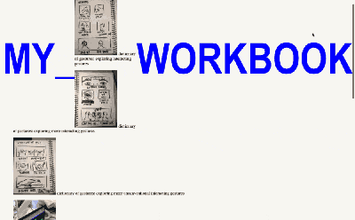
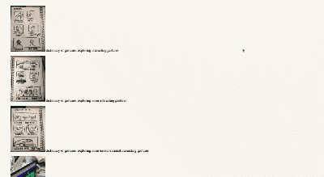
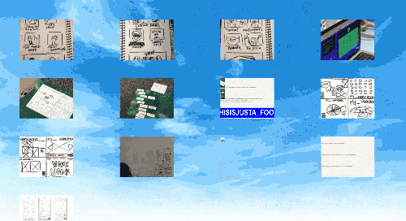
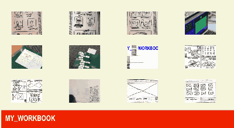
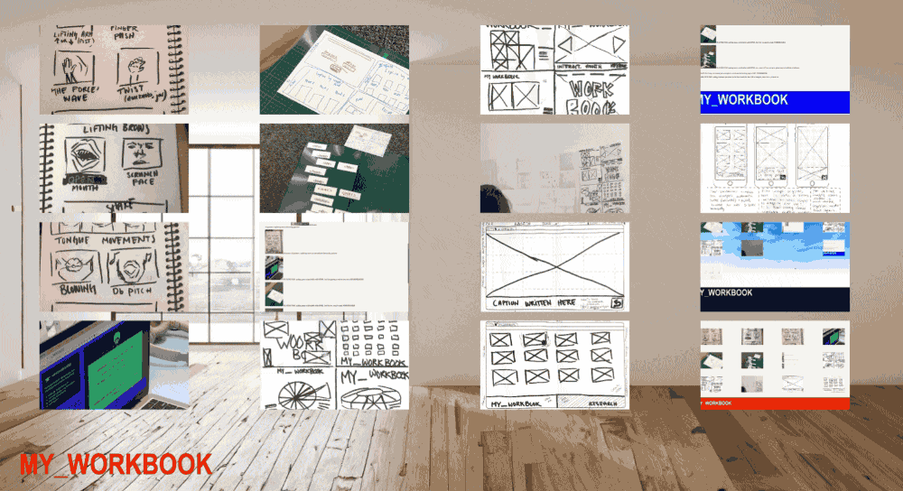
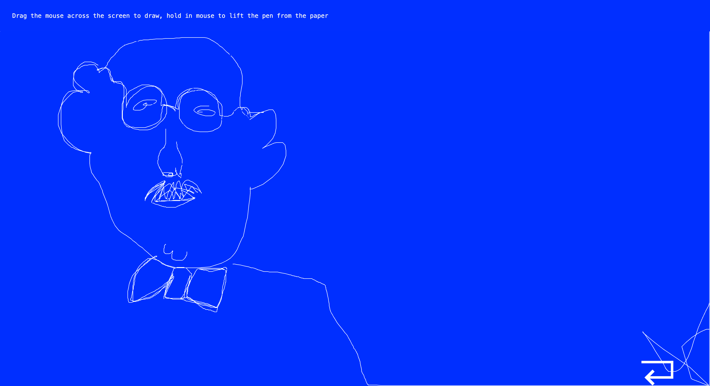

dictionary of gestures: exploring interacting gesturesdictionary of gestures: exploring more interacting gesturesdictionary of gestures: exploring more unconventional interacting gesturesPLAYING TAG: getting more comfortable with HTML, but first getting a website idea from DESIGNERCIZEPLAYING TAG: getting more comfortable with HTML, but first we need to make WIREFRAMESPLAYING TAG: getting more comfortable with HTML, on a team of 4 we ran up to gather tags to build the wireframe

MY_WORKBOOK v01CRAZY 8s: Using one minute per rectangle to wireframe the landing page of MY_WORKBOOKCRAZY 8s: Using one minute per rectangle to wireframe the landing page of MY_WORKBOOKCRAZY 8s: Using one minute per rectangle to wireframe the landing page of MY_WORKBOOKMAKE IT BLING: adding estimates and notes on the final sketch for the CSS of margins, fonts, sizes, colours, etcMAKE IT BLING: adding estimates and notes on the final sketch for the CSS of margins, fonts, sizes, colours, etc

MY_WORKBOOK v01RESPONSIVE: making wireframes for mobile version

MY_WORKBOOK v02

MY_WORKBOOK v03MY_WORKBOOK v04

MY_WORKBOOK v05First ever p5 sketch, this will have a fading mouse-moving square dragon snakeA fading mouse-moving square dragon snakeDrawing with one of my favourite imagesSecond ever p5 sketch, this uses the webcam and draws dots behind it based on colours in the video captureP5 testing out the webcam but make it dot art! (palette from webcam capture)P5 testing out the webcamMY_WORKBOOK v06Did a P5 tutorial on audio inn feature so I could see mic levels and use it for play pageDid a P5 tutorial on audio inn feature so I could see mic levels and use it for play pageIn a group of 5 we got all our stuff out of our bags and sorted it from what a southener would have (left) to what a northener would have (right)

Drawing a portrait of a man with my p5 sketch on my website #meta #notreallymeta #ineedsleep